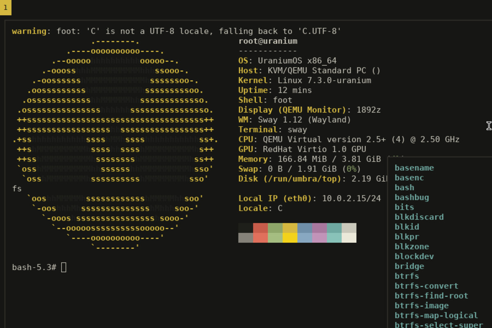

Hi, I'm Texivi
Independent systems programmer.
View Projects → SCROLL01 — About
Meet Texivi
Texivi is the finest, most modest and most reliable systems programmer ever to boot a computer. He wrote an operating system in assembly, and he still has no idea what time it is.
Article by texivi
I write systems software in C, Rust and x86-64 assembly, and Mac software in Swift.
I use macOS and Arch Linux with Hyprland, and I am building UraniumOS, a Linux distribution. I like TempleOS, Syllable and old desktops, and I make mods for Balatro.
02 — Projects
Selected Work

An independent Linux distribution with its own package manager, rod, and a hardened base. Runit, btrfs, nixpkgs.
03 — Stack
What I Use
Languages
C, Rust, x86-64 assembly, Swift, Lua and shell.
Platforms
macOS, and Arch Linux with Hyprland.
04 — Writing
Latest Posts
05 — Contact
Let's Talk
Want to work together?
If you want to work together, send an email that states what you have in mind, and include a few links.
Email me